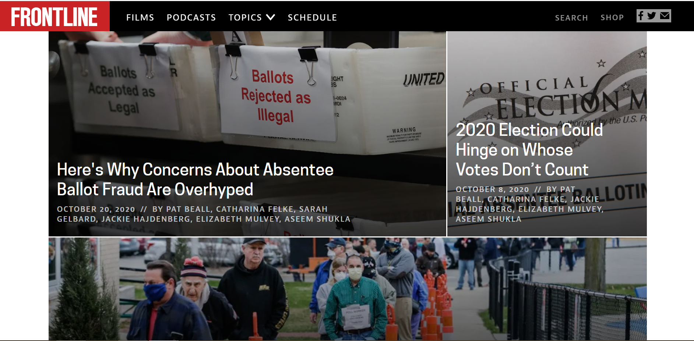

Covering voter access in 2020
I published front-page stories with USA Today showing that more than 1 million voters are likely to have their absentee ballots rejected in the general election 2020, and how clerks across the country are struggling to hold elections due to the unprecedented volume of mail-in ballots, and a lack of resources & time.
President Trump has falsely stated that absentee ballot fraud is a threat to the 2020 election. It's not. We debunked a conservative foundation's catalog of absentee ballot fraud which is often cited to prove the opposite. Our reporting was also part of the PBS Frontline documentary 'Whose Vote Counts' which aired in October 2020. Apart from doing national stories we partnered up with local media taking a closer look at state-specific issues around voter access. Together with the Milwaukee Journal Sentinel we revealed a system leaking from all sides during Wisconsin's election in April — buckling under the weight of a global pandemic and partisan bickering that kept the logistics of election day up in the air until less than a day before polls opened. Moreover, we interviewed more than 50 clerks across Wisconsin finding that many are concerned about a repeat of the state's messy April primary. 